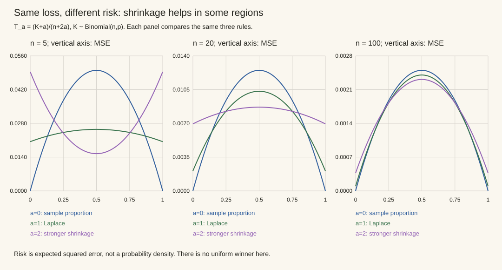

本页目录
统计 II · 点估计：矩法、极大似然与 Cramér–Rao
同一份数据可以产生不同的估计值。先问它们怎样从模型得到，再问在重复抽样中如何比较误差。本页用三种 Bernoulli 估计规则贯穿矩法、极大似然、风险与信息下界，并保留每条结论的适用条件。
学习层：“瞄得正”不是唯一目标，风险必须在重复抽样世界里读
1. 先预测：偏差能不能换方差？
实验固定 Bernoulli 样本 \(K\sim\operatorname{Binomial}(n,p)\)，比较三种估计：
先判断：有偏估计的 MSE 能否低于无偏估计？标准 \(1/[nI(p)]\) 是否直接约束所有有偏估计的方差？只看当前样本算出的一个数，能否知道估计量在重复抽样下的 MSE？
提交后，实验用闭式公式计算 \(E\hat p\)、Bias、Variance 与 MSE，并穷举 \(K=0,\ldots,n\) 的二项概率加权求和交叉检查；三种规则在同一坐标系扫描真值 \(p\)。这会把“当前估计值”与“估计规则的风险函数”分开。
2. 静态后备：MSE 的两本账
平方损失下
| 估计量 | 偏差 | 方差 | 读法 |
|---|---|---|---|
| \(K/n\) | \(0\) | \(p(1-p)/n\) | Bernoulli 内点恰好达到无偏 CR 下界 |
| \((K+1)/(n+2)\) | \((1-2p)/(n+2)\) | \(np(1-p)/(n+2)^2\) | 向 \(1/2\) 收缩，牺牲偏差降低方差 |
| \((K+2)/(n+4)\) | \(2(1-2p)/(n+4)\) | \(np(1-p)/(n+4)^2\) | 收缩更强，中心附近更稳，边缘可能偏得更多 |
标准 Cramér–Rao 结论在正则条件下约束无偏估计的方差。Bernoulli 的 \(p=0,1\) 是参数空间的非正则边界，标准内点 CR 定理不在端点发证；实验虚线在端点降到零只表示公式的连续延拓。对有偏估计 \(T\)，相应下界含 \(1+b'(\theta)\) 因子；因此不能看到一条收缩曲线低于 \(1/[nI]\) 就宣布违反定理。
3. 四条评价纪律
- 无偏不是统一赢家。若损失是平方误差，有限样本应比较完整 MSE；偏差与方差的取舍依赖参数区域和任务代价。
- 相合不描述有限样本。一个估计量可以相合，却在当前 \(n\) 下方差很大；也可以有限样本有偏，但偏差随 \(n\) 消失。
- 风险函数依赖未知真值。实践中的交叉验证、bootstrap、Bayes 风险或 minimax 分析是在不同假设下估风险，不能从一次误差直接读出总体 MSE。
- Bernoulli 样本比例有限样本达到 CR 界是特殊结构；“MLE 普遍有限样本无偏有效”是错误迁移。
1. 矩估计：样本矩接上哪条可逆的桥？
设样本独立同分布，参数为 \(\theta\)。先选取存在的总体矩 \(m_j(\theta)=E_\theta X^j\)，再用 \(\hat m_j=n^{-1}\sum_iX_i^j\) 替换。如果矩向量在真实参数附近有连续的逆映射 \(h\)，则由大数定律与连续映射定理，
这里每个用到的矩需要 \(E|X|^j<\infty\)；还必须能从这些矩识别参数，样本方程有可选择的合法解。仅仅“方程个数够多”不保证可逆。例如 \(N(0,\theta^2)\) 若允许 \(\theta\ne0\) 取正负值，所有矩都无法区别 \(\theta\) 与 \(-\theta\)；这首先是模型不可识别。Cauchy 分布的普通一阶矩不存在，也不能用样本均值一致地估计位置。
完整例子：均匀分布 \(U(a,b)\)，\(a<b\)。 写出 \(EX=(a+b)/2\)、\(\operatorname{Var}X=(b-a)^2/12\)。定义样本二阶中心矩
解得 \(\hat a=\bar X-\sqrt{3v_n}\)、\(\hat b=\bar X+\sqrt{3v_n}\)。这里分母是 \(n\)，因为我们在替换原始矩；它不是除以 \(n-1\) 的无偏样本方差。有限样本时，所得区间可能不包含全部观测，甚至在所有观测相同时退化；矩法并未施加均匀模型的样本支持约束。对真实非退化均匀总体，\(n\ge2\) 时相同观测的退化事件概率为零，且这些估计仍相合。
矩法的优势是只需选定的矩关系；效率、鲁棒性和可计算性则要针对模型比较，不能按方法名称排序。参照 Berkeley 的矩估计讲义。
2. 极大似然：固定数据后比较参数
对 i.i.d. 样本，似然是
固定的是观测 \(x\)，变化的是参数。连续数据的单个观测点概率为零，比较的是密度，不是“这个点发生的概率”。似然也不是参数的概率分布。对数严格递增，故正似然可以等价地最大化 \(\ell=\sum_i\log f_\theta(x_i)\)；零似然对应 \(-\infty\)。
求导等于零只筛选可微的内点极值，还要检查参数边界、支持集、全局最大值及最大值是否存在。以下例子把这些情况分开。
正态与泊松：求导后仍须检查参数空间
正态 \(N(\mu,\sigma^2)\) 的对数似然为
由平方分解 \(\sum_i(x_i-\mu)^2=\sum_i(x_i-\bar x)^2+n(\mu-\bar x)^2\)，先得到 \(\hat\mu=\bar x\)；再对 \(\sigma^2>0\) 最大化，若残差平方和为正，得 \(\hat\sigma^2=n^{-1}\sum_i(x_i-\bar x)^2\)。它的期望为 \((n-1)\sigma^2/n\)，所以 MLE 可以有偏。若所有数据相同，令 \(\sigma^2\downarrow0\) 会使似然无界，没有合法的正方差 MLE；连续非退化正态模型在 \(n\ge2\) 时该事件概率为零。
泊松模型取 \(\lambda\ge0\)，并将 \(\lambda=0\) 定义为集中在零的分布。若 \(\sum x_i>0\)，从 \(\ell'=\sum x_i/\lambda-n=0\) 得 \(\hat\lambda=\bar x\)；若观测全为零，最大值在边界 \(\hat\lambda=0\)。若事先规定 \(\lambda>0\)，后一种情况只有上确界，没有 MLE。
均匀端点：支持集携带了信息
对 \(U(0,\theta)\)，采用密度版本 \(f_\theta(x)=\theta^{-1}\mathbf1_{0\le x\le\theta}\)。若观测非负且最大值 \(M>0\)，则
在 \(\theta<M\) 时似然为零，在 \(\theta\ge M\) 时递减，所以最大值在支持边界。这里显式采用包含端点的密度版本；若把边界值排除，形式上的最大值可能变成未取到的上确界。不能对参数依赖的支持集装作看不见。
由 \(P_\theta(M\le m)=(m/\theta)^n\)（\(0\le m\le\theta\)），积分可得
所以 \(\tilde\theta=(n+1)M/n\) 无偏，方差为 \(\theta^2/[n(n+2)]\)。这个 \(1/n^2\) 量级将提醒我们：标准正则 CR 定理不能硬套给移动支持模型。
不变性与机器学习中的适用范围
若 MLE 存在，对变换 \(\eta=g(\theta)\) 定义剖面似然 \(L_\eta(\eta)=\sup_{g(\theta)=\eta}L(\theta)\)，则 \(g(\hat\theta)\) 达到其最大值；不要求 \(g\) 一一对应，非唯一最大值也须保留相应集合。
分类交叉熵、语言模型 token 的负对数条件概率，确实对应指定概率模型下的负对数似然。平方损失对应同方差高斯噪声的负对数似然（忽略与参数无关的常数及正比例因子）。但并非所有机器学习目标都是 MLE。MAP 在指定参数坐标与参考测度下最大化 \(\ell(\theta)+\log\pi(\theta)\)，等价于以 \(-\log\pi\) 作惩罚；先验密度变换含 Jacobian，因此 MAP 一般不像 MLE 那样具有重参数化不变性。模型错设、正则化或优化未找到全局解，也会改变结论。
3. 风险：比较估计规则，而不只比较一次读数
在平方损失下，\(R(\theta,T)=E_\theta(T-\theta)^2=\operatorname{Var}_\theta T+b(\theta)^2\)，其中 \(b(\theta)=E_\theta T-\theta\)，这一分解要求二阶矩有限。无偏只令第二项为零，并不保证总风险最小；在无偏估计中，方差比较才直接等于 MSE 比较。相合是 \(T_n\xrightarrow{P}\theta\)，也不能只凭它断言期望或 MSE 收敛。
一个模型把三条风险曲线全部推出来
设 \(K\sim\operatorname{Bin}(n,p)\)，\(n\ge1\)、\(0\le p\le1\)。统一写成
因为 \(EK=np\)、\(\operatorname{Var}K=np(1-p)\)，逐项计算得
\(a=0\) 是样本比例；\(a=1,2\) 逐渐加强向 \(1/2\) 的收缩。在 \(p=1/2\) 时三者偏差都为零，较强收缩方差较小；在 \(p=0,1\) 时样本比例完全准确，而收缩留下平方偏差。因此这里没有一个固定收缩量在所有 \(p\) 上都胜过样本比例。
令 \(q=p(1-p)\)，对 \(a>0\) 比较分母并整理：
这是图中交叉点的精确判据，等号处风险相等。不能知道真值后才挑选一条曲线，再宣称得到同样风险的可实施方法；这种选法使用了未知参数。

对 \(a>0\)，\(T_a\) 也是 Beta\((a,a)\) 先验下、平方损失的后验均值。后验为 Beta\((K+a,n-K+a)\)，所以其均值正是上述比值；它一般不是 MAP。Bayes 风险把 \(R_a(p)\) 再按先验平均，与每个固定 \(p\) 的频率学风险是不同问题。例如均匀先验下 \(a=1\) 的积分风险为 \(1/[6(n+2)]\)，样本比例为 \(1/(6n)\)；平均更小仍不意味着在每个 \(p\) 上都更小。
4. Cramér–Rao：下界从哪一步不等式来？
先限定一维内点参数。假定密度相对于同一参考测度、支持不随参数移动，参数可微且允许把涉及 \(1\) 和 \(T\) 的积分与参数求导交换；\(T\) 不含未知参数且方差有限。令单个观测的 score 为 \(s_\theta(X)=\partial_\theta\log f_\theta(X)\)，并假设 \(0<I(\theta)=E_\theta s_\theta^2<\infty\)。这些是本节使用的一组正则性要求，不能用“可求导”三个字全部替代。
对归一化等式求导，得到
在还允许二次导数交换积分时，从 \(\partial_\theta^2 f=f\{s^2+\partial_\theta^2\log f\}\) 得
这是期望曲率，不能把任意一次样本的尖峰直接当作真实信息量。样本 score \(U=\sum_i s_\theta(X_i)\) 的均值为零、方差为 \(nI\)。写 \(m(\theta)=E_\theta T\)，求导再用 \(EU=0\)：
最后只用 Cauchy–Schwarz：
无偏估计 \(\theta\) 时 \(m'=1\)，恢复 \(1/(nI)\)；有偏估计时 \(m'=1+b'\)；若无偏估计的是 \(g(\theta)\)，则分子为 \([g'(\theta)]^2\)。等号要求 \(T-ET\) 与 score 在该参数下几乎处处成比例。证明与模型例子见 MIT 的信息下界讲义及 Berkeley 的一般期望函数版本。
Bernoulli：收缩并未违反下界
在 \(0<p<1\)，\(s_p(X)=(X-p)/[p(1-p)]\)，故 \(I(p)=1/[p(1-p)]\)。对 \(T_a\) 有 \(m'_a=n/(n+2a)\)，所以有偏版本给出
恰好等于真实方差。它约束的是同一期望函数对应的方差，不是所有估计量的统一 MSE 下界。\(p=0,1\) 的公式连续延拓值为零，但这些边界不在上述内点定理的认证范围内。
移动支持反例：漏掉边界会造出假信息
均匀模型在支持内部的 \(s=-1/\theta\)，期望并非零；\(E s^2=1/\theta^2\)，而 \(-E\partial_\theta^2\log f=-1/\theta^2\) 甚至为负。两者不相等，因为对移动积分端点求导会产生边界项。如果误用 \(\theta^2/n\) 作为无偏方差下界，就会被上面 \(\tilde\theta\) 的真实方差 \(\theta^2/[n(n+2)]\) 反驳；失效的是正则假设。
5. MLE 的渐近结论：先相合，再局部展开
MLE 并不因写成 argmax 就自动相合。一个充分思路是：模型可识别、真实参数 \(\theta_0\) 是期望对数似然的唯一且分离的最大点，经验平均对数似然在参数域上一致收敛，最大值存在或近似最大化误差足够小。正确模型下 \(E_{\theta_0}\log f_{\theta_0}-E_{\theta_0}\log f_\theta=D_{\rm KL}(P_{\theta_0}\|P_\theta)\ge0\) 提供最大点的依据，但逐点大数定律本身不足以控制数据挑选的 argmax。参照 一致性讲义。
已经有相合的内点 MLE 后，若 score 满足 CLT、局部二阶导数平均在随机邻域内收敛到 \(-I(\theta_0)\)，由中值展开
得到
分子用 score 的 CLT，分母用局部一致控制和相合性，最后用 Slutsky；只在固定 \(\theta_0\) 写一个 LLN 不足以处理随机的 \(\tilde\theta_n\)。这是正则一维模型的证明骨架，见 渐近正态讲义。
这里的“渐近方差”首先指极限分布的方差。要进一步断言实际方差或期望收敛，还需一致可积等矩控制。渐近正态也不意味着有限样本无偏、任何参数点最优或模型错设仍有同一个方差公式。均匀端点的速度就不是 \(\sqrt n\)：对固定 \(t\ge0\)，当 \(n>t\) 时
极限是指数分布。前沿统计中的高维、非正则和稳健推断，需要从这些边界继续，而不是省略它们。
6. 三道迁移题：把条件用到新地方
题 1： \(f_\theta(x)=\theta x^{\theta-1}\)，\(0<x<1\)、\(\theta>0\)。求矩估计与 MLE，并判断 MLE 是否无偏。
展开推导
\(EX=\theta/(\theta+1)\)，所以 \(\hat\theta_M=\bar X/(1-\bar X)\)。对数似然 \(n\log\theta+(\theta-1)\sum\log X_i\) 严格凹，唯一最大点为 \(\hat\theta=n/Y\)，其中 \(Y=-\sum\log X_i\)。由 \(P(-\log X>y)=e^{-\theta y}\)，各项是率为 \(\theta\) 的指数变量，故 \(Y\sim\operatorname{Gamma}(n,\text{rate }\theta)\)。积分给出 \(E(1/Y)=\theta/(n-1)\)（\(n>1\)），所以 \(E\hat\theta=n\theta/(n-1)\)，偏大；\((n-1)/Y\) 在 \(n>1\) 时无偏。\(n=1\) 时该 MLE 的期望为无穷。若 \(n>2\)，\(\operatorname{Var}\hat\theta=n^2\theta^2/[(n-1)^2(n-2)]\)；有限矩条件不能漏写。
题 2： \(n=10\)，比较 \(T_0\) 与 \(T_1\) 在 \(p=0.1\) 和 \(p=0.5\) 的 MSE。再求 \(T_1\) 严格胜出的整个区域。
展开推导
\(p=0.1\) 时，\(R_0=0.009\)，\(R_1=(0.9+0.64)/144\approx0.0106944\)，收缩更差。\(p=0.5\) 时，\(R_0=0.025\)，\(R_1=2.5/144\approx0.0173611\)，收缩更好。判据为 \(p(1-p)>5/42\)，即
约为 \((0.138127,0.861873)\)；两个交叉点处相等。该区域按未知真值定义，只用于评价规则，不是看见一次样本后已知的标签。
题 3： 设 \(X_i\) i.i.d. \(N(\mu,\sigma^2)\)，\(\sigma^2\) 已知。估计 \(g(\mu)=\mu^2\) 时，\(T=\bar X^2-\sigma^2/n\) 无偏吗？它是否在 \(\mu=0\) 达到 CR 界？
展开推导
记 \(v=\sigma^2/n\)，\(\bar X=\mu+\sqrt v Z\)、\(Z\sim N(0,1)\)。\(E\bar X^2=\mu^2+v\)，故 \(ET=\mu^2\)。展开 \(T-\mu^2=2\mu\sqrt v Z+v(Z^2-1)\)，利用 \(EZ^3=0\)、\(EZ^4=3\)，得 \(\operatorname{Var}T=4\mu^2v+2v^2\)。CR 分子应为 \([g'(\mu)]^2=4\mu^2\)，下界为 \(4\mu^2\sigma^2/n\)。在 \(\mu=0\) 下界为零，真实方差仍为 \(2v^2>0\)；下界不一定可达，零下界不等于存在零误差估计。
下一页用抽样分布把点估计扩展为 置信区间，继续区分有限样本保证与渐近近似。